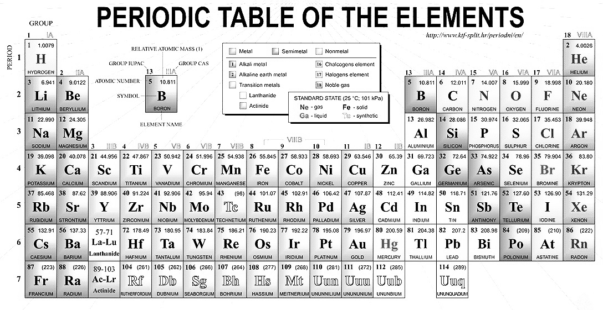
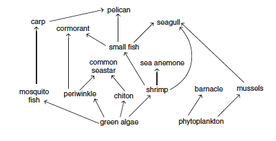
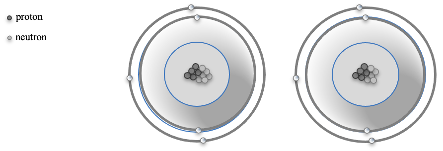
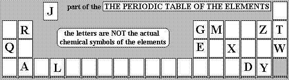
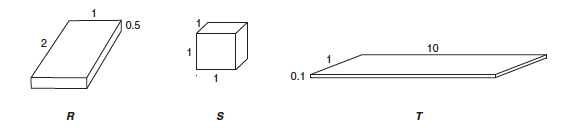
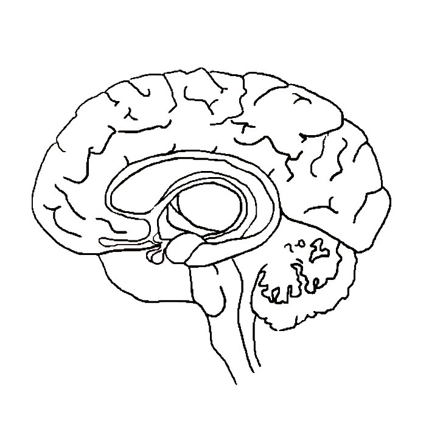
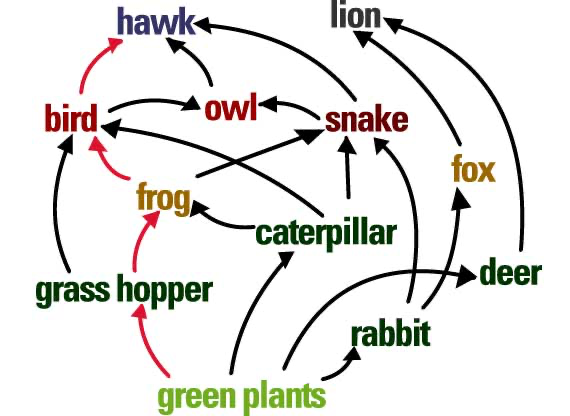
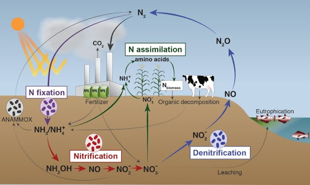
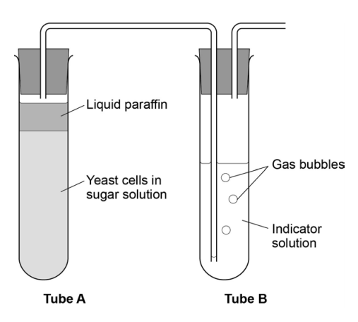
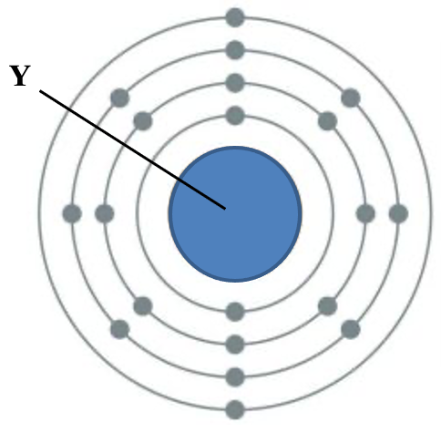

This exam covers ecosystems, chemistry and coordination and control. (Ecosystems is no longer a separate topic in the course, but the questions are still good revision.) The paper has two questions numbered 12; the second is Question 14 here.
Data page: periodic table.

Section A: Multiple choice (30 marks)
Ecosystems
A population is best described as:
What would be an example of an abiotic factor in this tropical rainforest ecosystem?
Humans burn fossil fuels and wood, releasing carbon dioxide into the atmosphere, which trees then absorb for photosynthesis. These processes are part of which cycle?
What is a difference between plant and animal cells?
Which kind of organism uses energy to produce its own food from inorganic molecules?
Which statement about cellular respiration and photosynthesis is correct?
Which is a product of anaerobic respiration in a plant cell?
Questions 8–10 refer to this food web.

The original source of energy for the pelican is:
The longest food chain in this food web consists of:
If more small fish were introduced into this ecosystem, there would most likely be an immediate decrease in:
Small fish eat shrimp, so more small fish means more shrimp are eaten.
Chemistry
The atomic number is best defined as:
Which row gives the correct charges (proton; neutron; electron; ion)?

Boron has two types of atom, shown above. These are examples of:
The symbol 2512Mg shows that this form of magnesium has:
Which of the following is likely to be an alkali metal?
Questions 16–18 refer to this partial periodic table. (The letters are not the real chemical symbols.)

Which elements are both noble gases?
Which elements are in period 2?
Which elements are non-metals?
What is the electronic structure of an aluminium atom, 2713Al (shell 1, shell 2, shell 3)?
Where in the periodic table are you most likely to find an element that readily forms a negative ion?
Coordination and control
What is an advantage of an organism being multicellular rather than unicellular?

The three shapes above all have the same volume (dimensions in cm). It would be expected that an organism of the shape:
The cube S has the smallest surface area for its volume, so it loses heat most slowly.
The movement of substances into and out of a cell is regulated by the:
Humans can detect changes in their internal environment and respond to them. What is this form of regulation called?
Which type of neuron transmits an impulse from the body to the central nervous system?
A student accidentally puts their hand in hot water, and a reflex quickly removes it. What is the purpose of the reflex response?
A scientist investigates the influence of a 20 g supplement shake on the time 20-year-old males take to complete a 5 km run. Which is the dependent variable?
Questions 28 and 29 refer to this diagram.

Which correctly names X, Y and Z?
What is a function of the part labelled X?
Marcus has type 1 diabetes: his body struggles to regulate the glucose concentration in his blood, which relies on the hormones insulin and glucagon. Which statement is correct?
Section B: Short answer (60 marks)
Ecosystems: Question 1

Name (i) a secondary consumer and (ii) a producer in this food web.
(i) Any of: fox, frog, bird, snake, lion. (ii) Green plants.
Write a food chain involving 4 organisms.
For example: green plants → rabbit → fox → lion (or green plants → grasshopper → frog → snake).
- Plants make their own food by .
- The arrows in the food web represent the transfer of .
Name and describe one way energy is lost from ecosystems.
As heat released from cellular respiration; or in waste excreted by organisms (energy that is not passed on to the next trophic level).
What trophic level(s) does the snake occupy in this food web?
Secondary consumer and tertiary consumer.
Pollution from a factory accident greatly reduces the number of frogs. Discuss the short-term effects on the food web, including one species above and one below frogs.
Below: caterpillars and grasshoppers will increase, as fewer frogs are eating them (1 mark). Above: birds and snakes will decrease, as they have less food (1 mark).
Explain the important role of detritivores and decomposers in every ecosystem.
They break down dead organic matter and waste so that it doesn't build up in the ecosystem (1 mark). They recycle nutrients back into the soil, to be reused by producers (1 mark).
Question 2

What is a biogeochemical cycle?
A natural pathway by which essential elements of living organisms circulate through the biotic and abiotic parts of an ecosystem, being continuously recycled.
The cycle shown is the cycle.
Using the cycle, describe (i) nitrogen fixation and (ii) denitrification.
(i) Nitrogen fixation: N2 from the air is converted (by bacteria, or lightning) into usable nitrogen compounds such as ammonia, NH3 (1 mark).
(ii) Denitrification: bacteria convert nitrates (NO3−) into nitrogen oxides and nitrogen gas, which return to the atmosphere (1 mark).
Question 3
All cells carry out cellular respiration, which can be aerobic or anaerobic.
Write the balanced chemical equation for aerobic respiration.
C6H12O6 + 6O2 → 6CO2 + 6H2O + energy
A student investigated the rate of anaerobic respiration in yeast. The indicator in tube B is blue when the CO2 concentration is very low, green when it is low, and yellow when it is high.

- When the yeast is respiring at its maximum rate, the indicator turns .
ii. The liquid paraffin stops from entering or leaving the solution.
iii. The other product of anaerobic respiration in yeast is .
Chemistry: Question 4

- Region Y is the .
- The atomic number of this neutral atom is .
- The atom has valence electrons.
Balance the equations.
Cu(NO3)2 + HCl → CuCl2 + HNO3
Al(OH)3 + HNO3 → H2O + Al(NO3)3
C3H8 + O2 → CO2 + H2O
Write balanced chemical equations, with states, for: (i) solid sodium reacts with water to produce sodium hydroxide solution and hydrogen gas; (ii) silver nitrate solution is mixed with potassium chloride solution, and silver chloride precipitates in a potassium nitrate solution.
(i) 2Na(s) + 2H2O(l) → 2NaOH(aq) + H2(g)
(ii) AgNO3(aq) + KCl(aq) → AgCl(s) + KNO3(aq)
A chlorine isotope, 3517Cl, was identified in an experiment. What are isotopes?
Atoms of the same element with the same number of protons but different numbers of neutrons, so they have different mass numbers.
How many neutrons does this atom have?
35 − 17 = 18.
Write the formulas of these compounds.
Zinc sulfide:
Magnesium nitrate:
Lead(II) bromide:
Ammonium sulfate:
Question 7
Magnesium, the 8th most abundant element on Earth, is reactive and exists in all living cells. It has 12 protons.
- Magnesium is a .
- A Mg2+ ion has electrons.
Magnesium has three isotopes: magnesium-24 (78.9%), magnesium-25 (10.0%) and magnesium-26 (11.1%). Calculate the relative atomic mass of magnesium, to 1 decimal place.
RAM = (78.9 × 24 + 10.0 × 25 + 11.1 × 26) ÷ 100 = 24.322 ≈ 24.3.
Question 8
In a practical on the law of conservation of mass, potassium iodide solution was put in a conical flask, and a small test tube of lead nitrate solution was carefully placed inside without mixing. The flask was stoppered and weighed. The solutions were then mixed, a yellow precipitate formed, and the flask was reweighed.
What is the law of conservation of mass?
Matter is neither created nor destroyed in a chemical reaction, so the total mass stays the same.
What evidence is there of a chemical change?
A colour change, or a (yellow) precipitate appeared.
Coordination and control: Question 9
As a cell increases in size, its surface area to volume ratio .
Explain how this places a limit on cell size.
As the cell grows, its surface area becomes smaller compared with the volume it encloses (1 mark). So not enough nutrients can enter, and wastes can't be removed fast enough, to sustain the larger volume, which limits cell size (1 mark).
Give one disadvantage of being (a) unicellular and (b) multicellular.
(a) Unicellular: all the functions of life must take place in each single cell; or there is little diversity, so a new disease could wipe them out.
(b) Multicellular: can't produce many offspring quickly when conditions are favourable; or more energy is needed to sustain the organism.

Label the neuron.
Label 1:
Label 2:
Label 3:
Label 4:
Label 5:
The impulse travels from the , through the cell body and along the axon, to the .
Give the function of (a) the cerebellum and (b) the hypothalamus.
(a) Cerebellum: coordinates voluntary movement, posture and balance, giving smooth, balanced muscle activity.
(b) Hypothalamus: controls homeostatic mechanisms such as temperature regulation.
Question 13
Human body temperature stays at about 37 °C due to homeostatic mechanisms.
What is homeostasis?
The maintenance of the internal environment within narrow limits, despite changes in the internal or external environment.
Tom's body temperature rises to 40 °C. Outline the steps that bring it back to normal.
- Temperature receptors in the body detect the rise in temperature (1 mark).
- A sensory neuron sends a message to the CNS (the thermoregulatory centre in the hypothalamus), which processes it (1 mark).
- The CNS sends a message along a motor neuron to an effector, such as the sweat glands, to produce a response, e.g. sweating (1 mark).
- The response reduces the original change: sweat evaporates, transferring heat from the body to the air, so the body cools (1 mark).
Both the nervous and endocrine systems are involved in communication in the body. Give two comparisons between the two systems.
Any two, e.g.:
- The nervous system sends electrical impulses along neurons; the endocrine system sends chemical hormones in the blood.
- Nervous responses are fast and short-lived; endocrine responses are slower but last longer.
- Nervous messages go to specific cells (muscles or glands); hormones travel all around the body but only affect target cells with the right receptors.